Questions about love rarely have simple answers, which is exactly why tarot is such a popular way to think them through. This free reading from Psychic Soulmate Reading invites you to sit quietly with a question about a partner, an ex or the person you have not met yet. Shuffle, choose six cards, and read what each position reveals about your wishes, your worries and the road ahead. Everything stays private on your device.
E
Elara
Hi, I am Elara. Take a breath and think of a question, or simply stay open. When you are ready, press “Shuffle”.
It stays in your browser and is only shown back to you in the result.
For entertainment and self-reflection.
How your love spread unfolds
Hold your heart's questionThink of the person, the feeling or the decision you want to understand, then shuffle slowly.
Let your hand chooseSix cards wait face down. Pick the ones you feel drawn to; you can change your mind by tapping a card again.
Listen to the storyEach card turns over in its own position and gives a gentle reading. Open any card for its fuller meaning in love and beyond.
The six positions
How you see yourself now. The picture of yourself you are carrying into this question.
What you truly want. The wish beneath the practical goals.
What you fear. The worry that quietly shapes your choices.
What works in your favour. A strength or support you can lean on.
What stands in your way. The obstacle, whether outside you or inside.
Where this is heading. The direction of travel if you carry on as you are.
The Major Arcana through the lens of love
Every trump card has something to say about the heart. Here is how each of the 22 is often read when the question is about a partner, a past relationship, or the person you hope to meet.
In love, The Fool is the courage to begin: a first message, a first date, a fresh start after a long pause. It asks you to trust your heart with an open mind, while staying alert so enthusiasm does not make you blind to red flags.
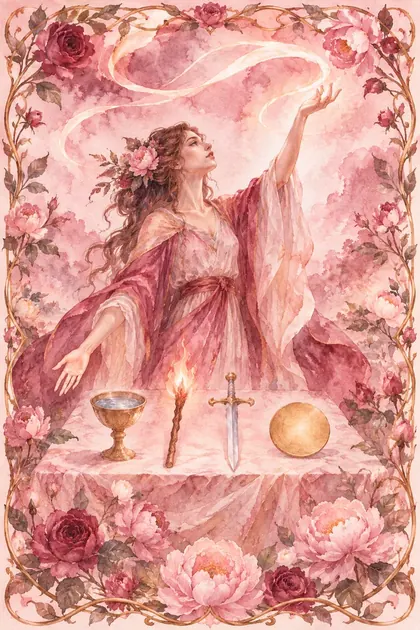
The Magician
Focused will · Skill and resourcefulness · Manifestation · Clear intention
When love is the question, The Magician says you hold more influence than you think. Clear words, honest intentions and deliberate actions shape a relationship. It also hints at a spark of attraction, and encourages you to meet it with purpose rather than leave things to chance.
This card suggests that something unspoken lives between you and another person, or within your own heart. The High Priestess asks for quiet listening instead of pressing for declarations. Trust the feeling you cannot yet explain, and let closeness reveal itself without being forced.
The Empress is love at its most nurturing: affection, sensuality, devotion and a home that feels warm. She can mean a relationship blossoming or a need to treat yourself with the same tenderness you give others. Love grows best when it is cared for.
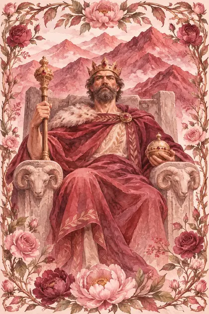
The Emperor
Structure · Authority · Stability · Leadership
In matters of the heart, The Emperor represents commitment, protection and steady reliability. He asks whether you are building something secure together, and whether boundaries are clear. He can also warn of control, so ask honestly whether stability has slipped into rigidity.
Here the card speaks of commitment recognised by others: engagement, marriage, shared traditions, family expectations. It asks whether a conventional path suits your relationship, or whether the two of you need to write your own vows. Either way, shared beliefs form the foundation.
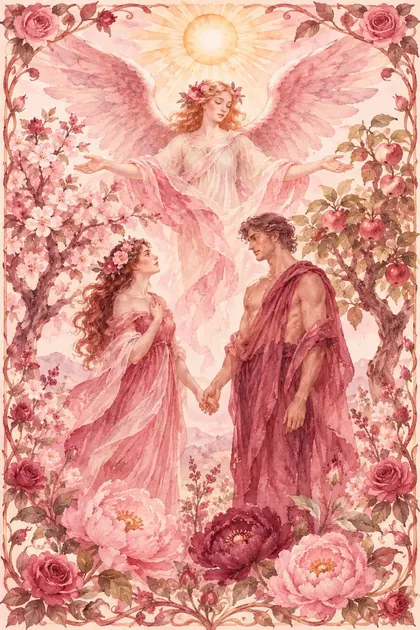
The Lovers
Choice and alignment · Deep connection · Shared values · Union
The most romantic card in the deck, though its deeper theme is choice. The Lovers points to genuine connection and values that align, and asks you to choose love that is honest. A decision between two paths may also be hiding in your heart.
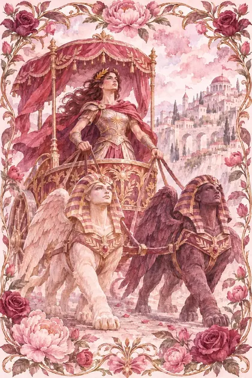
The Chariot
Determination · Self-mastery · Forward momentum · Victory through effort
In love, The Chariot is determination: showing up, steering through disagreements and moving the relationship forward together. It can describe pursuing someone with focus, or learning to balance two strong wills. Drive helps, but it works best when both of you agree on the destination.
Strength is tender courage. In relationships it means patience with a partner's flaws and your own, and the calm to handle jealousy or fear without lashing out. It suggests that lasting affection is built from compassion, not from winning arguments.
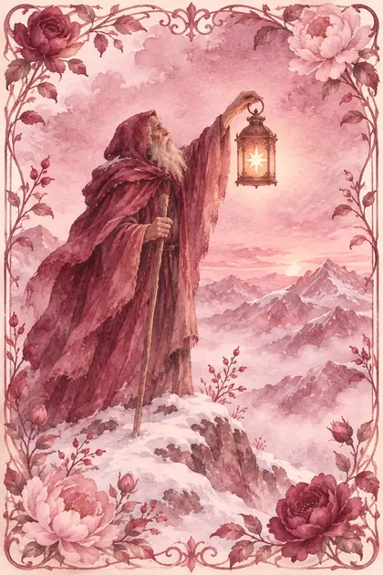
The Hermit
Solitude · Inner guidance · Reflection · Wisdom
When love is the topic, The Hermit suggests a season of solitude can be healthy. It may mean time alone after a breakup, or a need to understand yourself before seeking someone new. Quiet reflection now helps you recognise the right connection later.
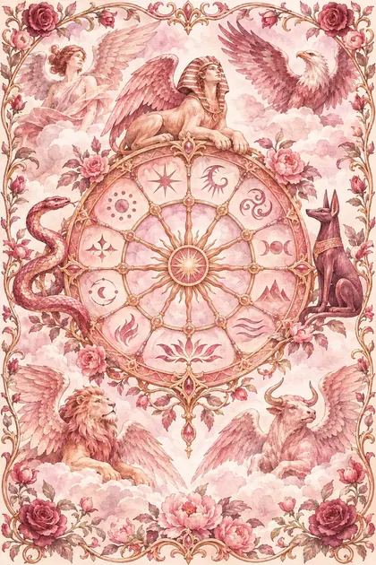
Wheel of Fortune
Cycles and change · Turning point · Fortune · Fate and timing
Love moves in cycles, and the Wheel reminds you of it. A chance meeting, an unexpected return or a shift in a long relationship may be near. Timing matters, so stay flexible, trust that seasons change, and keep choosing kindness meanwhile.
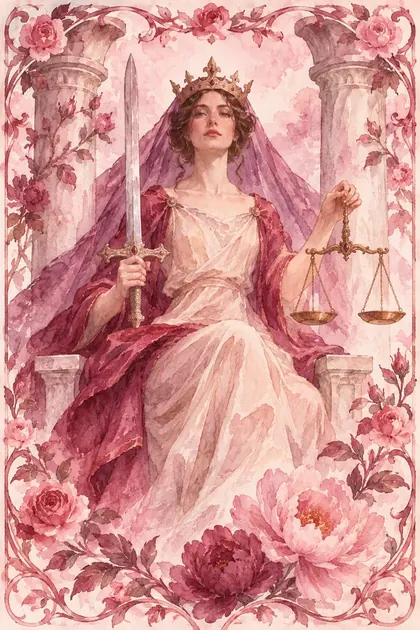
Justice
Fairness and balance · Accountability · Clear-eyed truth · Cause and effect
In love, Justice asks for fairness and honest accounting. Are both of you giving and receiving in balance? It can point to a promise that deserves to be kept or a truth that must be spoken. Clear, kind honesty builds trust that lasts.
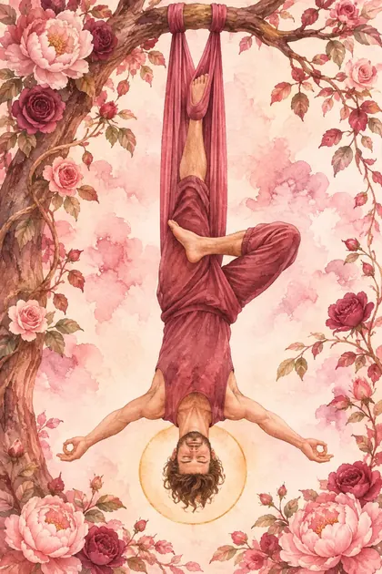
The Hanged Man
Pause and surrender · New perspective · Letting go of control · Voluntary sacrifice
In a relationship, The Hanged Man marks a standstill that cannot be forced. Waiting may feel uncomfortable, yet it lets you see the situation from your partner's side or from a calmer place. Surrender the urge to control, and a new understanding may follow.
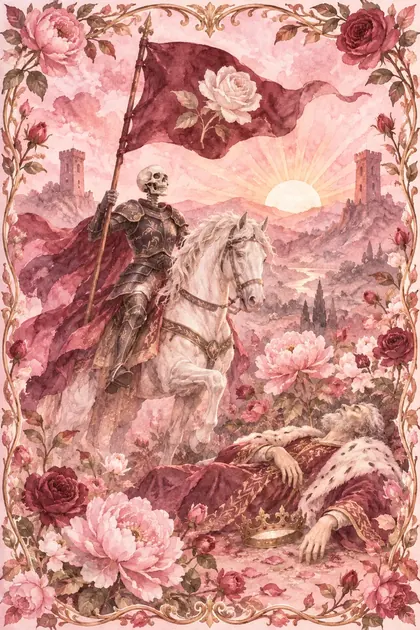
Death
Endings and transformation · Letting go · Clearing the old · Necessary change
In love, Death rarely means a person leaving forever. It signals a chapter closing, perhaps an old pattern, a past relationship you are still carrying, or a stage of your partnership. Letting go hurts, yet it clears room for a more honest connection.
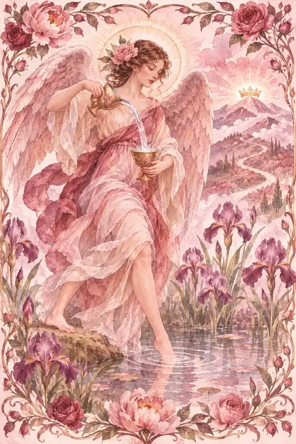
Temperance
Balance and moderation · Patience · Blending opposites · Healing and harmony
Temperance is love that blends, with two people finding rhythm through patience and compromise. It speaks of healing after conflict and a relationship that grows steadily instead of dramatically. Add a little understanding, a little humour, and give things time to settle.
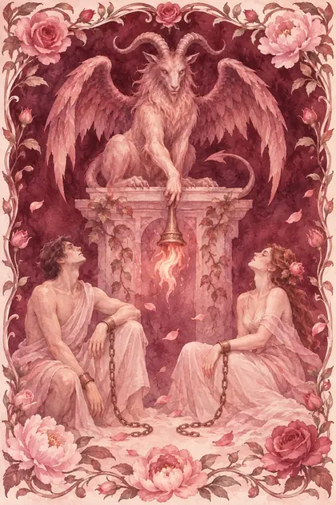
The Devil
Attachment and bondage · Temptation · Unhealthy patterns · Shadow side
In matters of love, The Devil can show obsession, jealousy or a bond that feels impossible to leave. The chains in the picture are loose, which is the hopeful part. Naming the pattern is the first step toward a healthier, freer way of loving.
In relationships, The Tower is the sudden truth: an argument, a revelation or a break that shakes everything. It is painful, yet it clears away illusions. After the shock, you can decide whether to rebuild together or start again on solid ground.
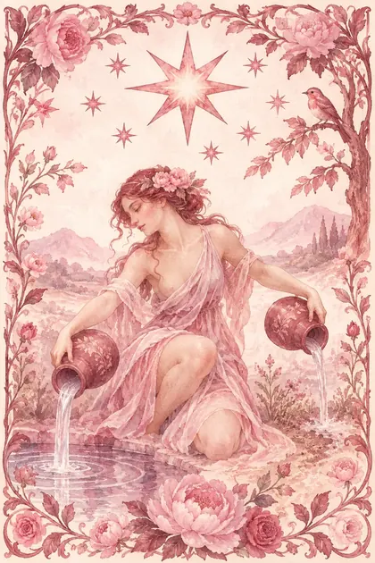
The Star
Hope and renewal · Healing · Inspiration · Serenity
For the heart, The Star is gentle hope after a difficult time. It speaks of healing from old wounds and trusting that love can be found again. Rest, be kind to yourself, and let confidence return at its own quiet pace.
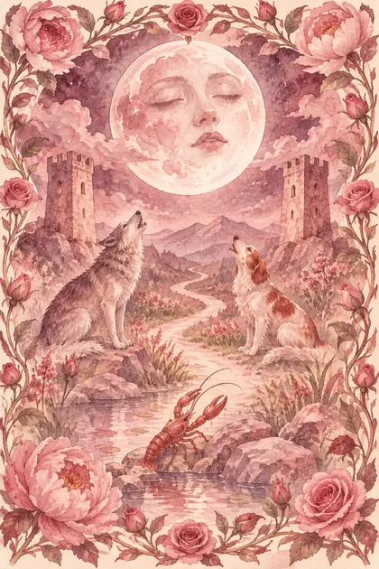
The Moon
Illusion and uncertainty · Intuition · Subconscious fears · Dreams
In love, The Moon can mean mixed signals, unspoken worries or feelings you cannot quite read. It advises caution about assumptions, since moonlight distorts. Wait for clarity, ask honest questions, and notice whether your fears are guiding you more than the facts.
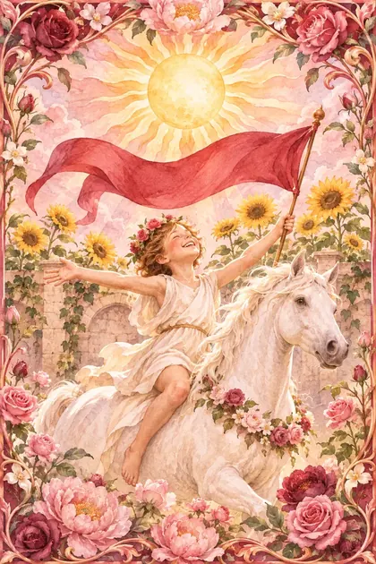
The Sun
Joy and vitality · Clarity and success · Warmth · Confidence
One of the happiest cards for love. The Sun speaks of openness, joy and a relationship that feels easy and warm. It can also mean you are ready to be seen as you truly are. Celebrate affection and let yourself enjoy it.
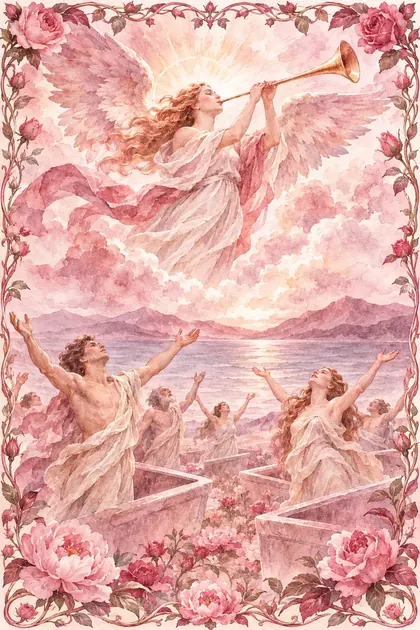
Judgement
Awakening and calling · Reckoning · Renewal · Self-forgiveness
For the heart, Judgement is an awakening: you look back on past relationships, forgive yourself and others, and answer a call toward deeper love. It invites you to stop repeating the old story, and to begin a new one with honesty.
In love, The World marks wholeness, a relationship feeling complete, or finishing an emotional chapter so you can enter the next. It suggests fulfilment that comes from being whole yourself. Celebrate how far you have come, and welcome what grows from it.
Free tarot reading FAQ
Can this reading tell me whether someone is my soulmate?
No tarot spread can name a soulmate, and we would be wary of any that claims to. What the cards can do is bring your own feelings, hopes and fears into view, which often makes it easier to decide how you want to move forward in love. Many people find that simply naming what they hope for, even privately, is the most revealing part of the experience, whatever cards happen to appear.
Do I have to share who I am asking about?
Not at all. You can leave the question box empty or write a few private words. Whatever you type stays in your own browser and is shown back only to you, so there is nothing to disclose and nobody else sees it. That freedom matters in love, where questions can feel tender and personal, and where you may not yet be ready to explain your situation to anyone else.
What if I draw a card that sounds frightening?
Cards like The Tower or The Devil look harsh but rarely predict disaster. In love they usually point to something worth noticing, such as an unhealthy pattern or a truth that needs saying. Read them as invitations to look honestly, then choose your response. Whatever appears, give yourself time and kindness. A single spread is a moment of reflection rather than a final answer, and you are always free to shuffle again later.
Is this reading meant for relationship advice?
It is meant for gentle reflection and entertainment. Please do not treat it as a substitute for counselling or for frank conversation with the people involved. If a relationship feels unsafe or deeply painful, speaking with a qualified professional is a wiser step. Love is deeply personal and no website can know your circumstances, so use the cards as a gentle companion for your own thinking and not as an authority.
Ready for answers that fit your life?
The cards give you a thoughtful starting point. A live psychic can look at the full picture and talk through the details with you.